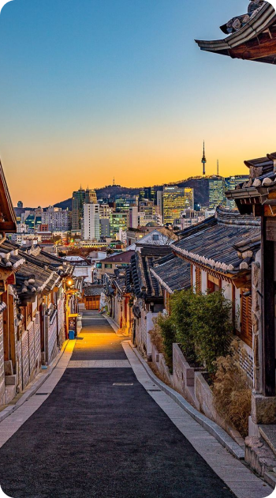
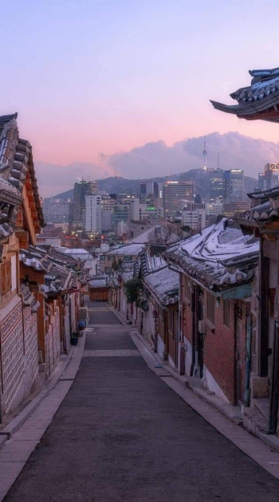

북촌한옥마을
종로의 북쪽마을
도심을 흐르는 청계천과
600년 선조의 숨결이 살아숨쉬는 곳


종로의 북쪽마을
도심을 흐르는 청계천과
600년 선조의 숨결이 살아숨쉬는 곳
북촌 한옥마을은
전통한옥이 밀집되어 있는 서울의 대표적인 전통 주거지역입니다.
조선시대
북촌지역의 가장 큰 특성은 지형과 물길입니다. 북촌의 지형은 남쪽이 낮고 북쪽으로 갈수록 높고 경사가 심해져서, 네 곳의 골짜기가 형성되어 있습니다.
물길은 계곡을 따라 흐르고, 길도 물길과 나란히 형성되어 있습니다. 따라서 길의 형태는 물길을 따라 자연스럽게 남쪽으로 향하고 있으며 이는 오늘날까지도
북촌의 주요 남북가로를 이루고 있는 삼청동길, 가회동길, 계동길, 원서동길 등을 통해 확인할 수 있습니다.
한양의 중심부, 경복궁과 창덕궁 사이에 자리잡고 있고 북악과 응봉을 잇는 산줄기의 남사면에 위치하고 있어 지리적으로 좋은 환경을 갖추고 있는 북촌은
예로부터 권문세가들의 주거지로 자리매김 해왔습니다. 1906년 호적자료에 따르면 북촌 전체인구 10,241(1,932호) 중 호주의 신분에 따른 구분에서
양반과 관료가 43.6%를 차지하고 있어 권문세가들의 주거지로 양반들의 주택들과 관료들의 집이 중심을 이루는 지역이었음을 알 수 있습니다.
일제강점기
일제강점기 때 도시로의 인구집중 현상은 서울의 주택난을 가중시켰고 이러한 주택난에 따라 민간에 의해 진행되는 구획형 개발이 나타났습니다.
주택의 매매를 통해 이윤을 얻고자 하는 주택경영회사들이 등장하면서 1912년 이후 주택난으로 인해 중대형 필지의 분할을 통해 이전과는 다른 형태의 한옥들이
급속하게 건설되었습니다. 현재 북촌의 대표적 한옥밀집지역인 가회동 31번지, 11번지, 삼청동 35번지 일대 등도 모두 이 때 주택경영회사에 의해 집단적으로
건설된 한옥주거지들로서 대규모로 건설된 후 분양되는 방식으로 공급되었습니다. 이 시기 건설된 한옥들에는 유리와 타일 등 이전에 쓰이지 않던 새로운
재료가 사용되었고 평면이 일정부분 표준화되었으며 가로체계 등과 함께 만들어진다는 점에서 이전의 한옥과는 차이가 있습니다.
이러한 한옥 주거지는 해방이후 1960년대 초반까지 지속적으로 건설되어 학교 및 공공시설로 남은 몇 개의 대형부지들을 제외하고는 거의 모든 지역이
한옥들로 채워졌습니다.
1970년대
1960년대 후반기부터 1970년대 전반기에 걸쳐서 시행된 영동지구 개발사업을 시작으로 본격적인 강남개발이 이루어짐에 따라 강북지역의 인구가
강남으로 대거 이동하면서 강북지역의 학교들도 강남지역으로 이전하게 되었습니다. 1976년 경기고가 이전하자 그 건물은 정독도서관으로 이용되었고,
1978년 휘문고가 이전하면서 1983년 그 자리에 15층의 현대건설사옥이 신축되었으며, 창덕여고가 1989년 이전한 뒤에는 헌법재판소가 들어섰습니다.
학교가 이전하면서 신축된 대규모 시설들은 북촌 지역의 경관을 크게 바꾸는 중요한 요인으로 작용하게 되었습니다.
1980년대
학교 이전지 개발에 따른 변화가 확산되면서 한옥의 보존 필요성이 대두되었습니다. 1976년 민속경관지역 지정 논의 이후 1983년 제4종미관지구 지정으로
본격적인 한옥보존정책이 시행되었습니다. 그러나 이 시기의 한옥보존정책은 주민들과의 논의나 합의없이 행정주도로 시행된 것이며, 한옥을 문화재와 같이
엄격하게 규제하는 방식이었고, 또한 북촌로를 확대 포장하면서 많은 한옥들을 철거하는 등 이중적인 행정운영으로 주민들의 불만을 가져왔습니다.
1990년대
주민들의 계속되는 건축기준 완화 요구에 따라 서울시는 1991년 5월 주택의 경우 1층으로 규제하던 건물높이를 10미터 이하(또는 3층 이하)로 완화하였는데,
이를 계기로 다세대 주택의 신축이 본격적으로 이루어지게 되었습니다. 이후 1994년에는 경복궁 주변의 10미터 고도제한을 16미터로 완화하고 최대 5층까지
건축을 허용하면서 원서동을 비롯한 북촌 전역에서 한옥을 철거한 후 다세대 주택을 건설하는 것이 확산되어 북촌 경관이 급속히 훼손되기 시작하였습니다.
2000년대
급속도로 진행되는 한옥 멸실과 다세대주택의 신축 등으로 북촌 경관이 변해가고 주거환경도 악화되어가자 1999년 주민조직인 '(사)종로북촌가꾸기회'의
요구로 서울연구원에서 주민들과 전문가, 서울시와 더불어 새로운 북촌 가꾸기 정책을 수립하였습니다. 북촌의 보전과 관리를 위해 기존의 일방적 규제와는
달리 주민들의 자발적 의사에 기초하는 한옥등록제를 근간으로 하고, 현대적 생활요구를 수용하면서도 한옥 고유의 아름다움이 유지되도록 한옥 수선을
유도하고 지원하며 관리하고자 하였습니다. 또한 주민들의 적극적 참여와 활동으로 마을의 환경을 개선해가고, 거주지로서의 매력을 증진시켜가는 과정을
통해 북촌을 가꾸어 가고자 하는 것으로 2001년부터 본격적으로 시행되어 오늘에 이르고 있습니다.
청계천과 종로의 윗동네라는 뜻의 북촌(North Village)은
경복궁과 창덕궁 사이에 위치하며,
가회동과 송현동, 안국동 그리고 삼청동이 있습니다.
북촌한옥마을에 방문하시는 분들을 위한 편의시설 및 안내 공간을 소개합니다.
평일 09:00 ~ 18:00
주말 09:00 ~ 18:00 (일 휴관)
종로구 계동 2길 11-7
02-766-4117
평일 09:00 ~ 18:00
주말 -
종로구 북촌로 5길 48
02-2148-4161
평일 09:00 ~ 18:00
주말 10:00 ~ 17:00 (일 휴관)
종로구 계동길 37
02-2133-1371
평일 09:00 ~ 18:00
주말 09:00 ~ 18:00
종로구 계동 2길 11-9
02-765-1373
평일 10:00 ~ 17:00
주말 09:00 ~ 15:00 (수, 일 휴관)
종로구 북촌로 12길 24-12
02-730-2067
평일 10:00 ~ 18:00
주말 10:00 ~ 18:00 (일, 명절 휴관)
종로구 북촌로 12길 10
02-3673-2778
평일 09:00 ~ 17:00
주말 09:00 ~ 17:00
종로구 북촌로 12길 17
02-733-2577
평일 11:00 ~ 17:00
주말 11:00 ~ 17:00 (월, 화 휴관)
종로구 북촌로 12길 5-12
02-766-7858
아름다운 관광지 문화를 위해 다음은 꼭 지켜주세요!


아침 저녁 시간을 지켜주세요.
(오전 10시 이후 ~ 일몰전)
열려진 문 틈, 담 넘어 마당
촬영 등은 삼가해 주세요.
깨끗하고 아름다운
한옥의 인상을 만들어주세요.
확성기나 마이크, 고성으로
소음공해는 안돼요.
한옥의 유지 및 관리에 필요한 비용의 일부를 서울시에서 지원함으로써 한옥 거주 주민분들의 생활과 환경 개선에 도움을 드리는 제도입니다. 해외사례의 경우 정부에서 임의로 등록을
시행하는 경우가 많지만, 서울시에서는 주민의 자유의사에 따른 한옥등록제도를 도입하여 시행 중입니다.
등록 시 한옥 수선 및 신축 공사비 지원, 세금 감면, 거주자 우선 주차장 우선배정 등을 지원해 드리는 제도입니다.

한옥등록신청서 작성 후 관할 구청에 제출
관련 서류 확인 및 현장조사 후
서울시에 한옥등록 심의 요청
관련 서류 검토 및
한옥위원회/건축위훤회의 심의를 통해 등록 결정
한옥 등록 필증 교부